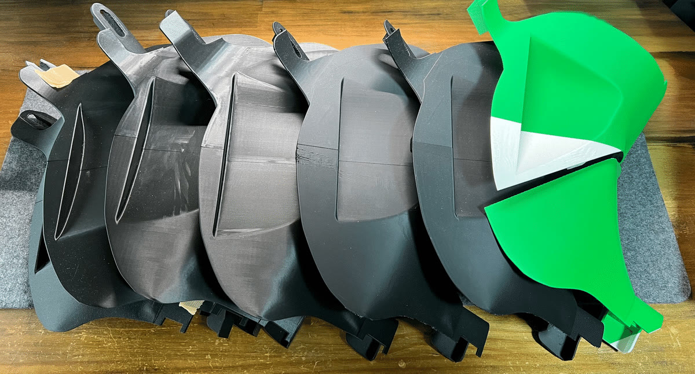

Story
「だったら作ってしまおう。」
CX-8に乗り始めてから、高速道路でACCを使うたびに感じていた違和感。アクセルもブレーキも踏まなくていい。快適なはずなのに、右足の置き場がない——。
純正には右足用フットレストの設定がなく、社外品はそれなりのお値段。本職が3D CAD/CAMエンジニアということもあり、純正トリムカバーをノギスと定規で地道に採寸するところから、自分で設計することにしました。
PLAで寸法を確認し、ABSでは反りに悩まされ、耐熱PLAにたどり着くまで試作は数知れず。足置きの幅も10mmから始めて、30mmで「これだ」という感覚に行き着きました。装着して高速道路を走った瞬間の、右足がしっかり支えられる感じ。長距離の疲労感が体感で変わりました。
開発の全記録をnoteで読む